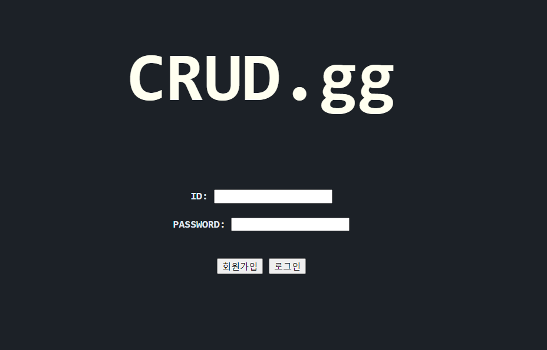
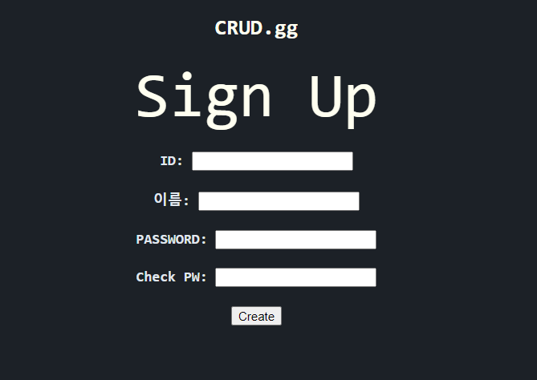

Go로 만드는 웹 (1): MySQL 연동
현재 golang, mysql을 사용하여 로그인, 회원가입을 하는 웹페이지를 만들고 있다.
음.. 일단 이 처음부터 다른 사람이 짜놓은 코드라던가 best practice는 보지 않고 만들어 보기로 했다. 뭔가 한번 봐버리면 그 틀에서 헤어 나오지 못할까 봐 일단 내 방식대로 완성을 시키고 다른 사람들이 주로 쓰는 코드와 비교해 보기로 하였다.
내가 만들고자 하는 것은 일단 로그인, 회원가입이 가능한 페이지를 만들고(1차 목표) 흥미로운 API를 찾아 내 페이지에서 해당 API를 호출하여 뭔가 새로운 기능을 붙이는 것이다(2차 목표). 혼자서 웹 개발을 하는 것이 처음이라 아직 배워야 할 것도 많고 부족함도 많지만 하나하나 배우다 보면 어떤 걸 공부해야 하는지, 어떤 부분이 부족한지 알 수 있지 않을까 싶다. 그럼 내가 현재까지 구현한 부분에 대해 정리해보겠다.
데이터베이스 부분을 진행할 때는 내가 전에 올렸던 글 Linux에서 MySQL 설치부터 CRUD까지를 참고하였다. ( 이렇게 내가 해본 것을 내 블로그만 보고 다시 재현할 수 있게끔 하는 것이 글을 정리하는 목적 중 하나이다!). 우선 데이터베이스를 만들어야 하는데 데이터베이스를 만들고 새 계정에 권한을 부여했다.
GRANT ALL Privileges On <DB_NAME> TO <DB_ID>@localhost
그러고 아래와 같은 테이블을 생성해주었다.
1
2
3
4
5
6
7
8
+----------+-------------+------+-----+---------+-------+
| Field | Type | Null | Key | Default | Extra |
+----------+-------------+------+-----+---------+-------+
| id | varchar(30) | NO | PRI | NULL | |
| password | varchar(30) | NO | | NULL | |
| created | datetime | NO | | NULL | |
| name | varchar(30) | NO | | NULL | |
+----------+-------------+------+-----+---------+-------+
고언어에서 mysql을 다루려면 go get github.com/go-sql-driver/mysql 명령어를 통해 mysql 드라이버를 받아야 한다. 드라이버를 받았다면 아래와 같은 코드로 연결을 해줄 수 있다.
1
2
3
4
5
6
7
8
9
10
11
12
13
14
15
16
17
18
19
20
21
package main
import (
"database/sql"
"net/http"
"text/template"
_ "github.com/go-sql-driver/mysql"
)
var db *sql.DB
func main(){
var connectionString = "user:pw@tcp(host:3306)/dbName"
var err error
db, err = sql.Open("mysql", connectionString)
checkError(err)
defer db.Close()
pingDB(db)
}
db를 전역변수로 해준 까닭은 후에 HandlerFunc에서 db를 다른 함수로 전달해주기 위해 전역변수로 생성해주었다. 아 그리고 위 코드를 실행했을 때 connection error가 발생한다면
- 서버가 꺼져있다면
$ sudo service mysql start로 서버를 켠다. - 해당 DB에 접근권한이 없는 user를 사용했는지 확인한다.
정도를 체크해보면 되겠다.
그러고 이제 서버로 폼데이터를 보낼 페이지를 작성하였다. 우선 로그인 페이지, 회원가입 페이지만 만들어 놓았으며 아래와 같이 간단하게 만들어보았다.
로그인 페이지
회원가입 버튼을 누르면 회원가입 페이지로 이동한다.

회원가입 페이지
상단의 CRUD.gg를 누르면 홈으로 되돌아가고 아래 양식을 작성한 후 Create를 눌러 폼데이터를 서버에 전송한다.

앞으로 로그인을 성공했을 때의 페이지, 비밀번호 변경 페이지, 회원 정보 불러오기 등의 페이지를 추가할 것이다. 로그인을 위해 쿠키, Access token 등 공부를 해봐야 할 것 같다..
이제 서버쪽을 살펴보자. net/http패키지 기반으로 구현하였으며 http/HandleFunc로 라우팅을 해주었다. 이게 그냥 서버를 띄우니까 명시적으로 불러주지 않은 파일들을 서버에 올라가지 않아 css가 제대로 적용이 안되었는데 http.FileServer()로 해결을 해주었다.
func main()
1
2
3
4
5
6
7
8
9
10
11
func main(){
// ...
http.HandleFunc("/", index)
http.HandleFunc("/signUp", signUp)
http.Handle("/template/", http.StripPrefix("/template/", http.FileServer(http.Dir("template"))))
fmt.Println("Listening...")
http.ListenAndServe(":8080", nil)
// ...
}
func index()
1
2
3
4
5
6
7
func index(res http.ResponseWriter, req *http.Request) {
tpl := template.Must(template.ParseFiles("template/index.htm"))
err := tpl.Execute(res, nil)
if err != nil {
log.Fatalln("error executing template", err)
}
}
func signUp()
1
2
3
4
5
6
7
8
9
10
11
12
13
func signUp(res http.ResponseWriter, req *http.Request) {
if req.Method == "GET" {
tpl := template.Must(template.ParseFiles("template/signUp.htm"))
err := tpl.Execute(res, nil)
if err != nil {
log.Fatalln("error executing template", err)
}
}
if req.Method == "POST" {
Create(db, req)
http.Redirect(res, req, "/", http.StatusSeeOther)
}
}
func Create()
1
2
3
4
5
6
7
8
9
10
11
12
13
14
15
func Create2(db *sql.DB, req *http.Request) {
id := req.PostFormValue("id")
password := req.PostFormValue("password")
name := req.PostFormValue("name")
t := time.Now().Format("2006-01-02 15:04:05")
stmt, err := db.Prepare("insert into user (id, password, name, created) values (?, ?, ?, ?)")
checkError(err)
defer stmt.Close()
res, err := stmt.Exec(id, password, name, t)
checkError(err)
count, err := res.RowsAffected()
checkError(err)
fmt.Println(count, "rows affected")
}
일단…. 회원가입 페이지에서 폼데이터를 서버로 전송하여 데이터베이스에 작성한 데이터 기반으로 새로운 유저를 만들어 저장해주는 것 까지는 완료를 하였다. 아직 코드가 많이 더러운것같다.. 로그인 기능까지 구현하고 코드를 한번 싹 정리해야겠다.
마치면서 지금까지 한 것들을 정리해보면
- 로그인, 회원가입 페이지
- 웹서버와 DB서버 연결 (Go + Mysql)
- 회원가입시 DB에 회원 업로드(보안 취약/에러 핸들링 해줘야함)
정리해보니 별로 안되는거 같다.. 음 앞으로 해야할 것들은
- 로그인 기능 구현
- 로그인 인증 및 유지
- 비밀번호 등 보안 보완
- 코드 정리
- Golang web server 프레임워크 찾아보기
생각나는건 이정도 있는 것 같다. 다음에는 로그인 기능 구현과 함께 돌아오겠다.